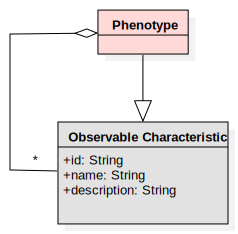

Phenotype

Description
A set of one or more observable characteristics
References
NCI:
https://www.cancer.gov/publications/dictionaries/genetics-dictionary/def/phenotype
Generalized Elements
Observable Characteristic
Relationships
(Phenotype—Observable Characteristic)
Sources and Tools
HPO
: The Human Phenotype Ontology (HPO) provides a standardized vocabulary of phenotypic abnormalities encountered in human disease.